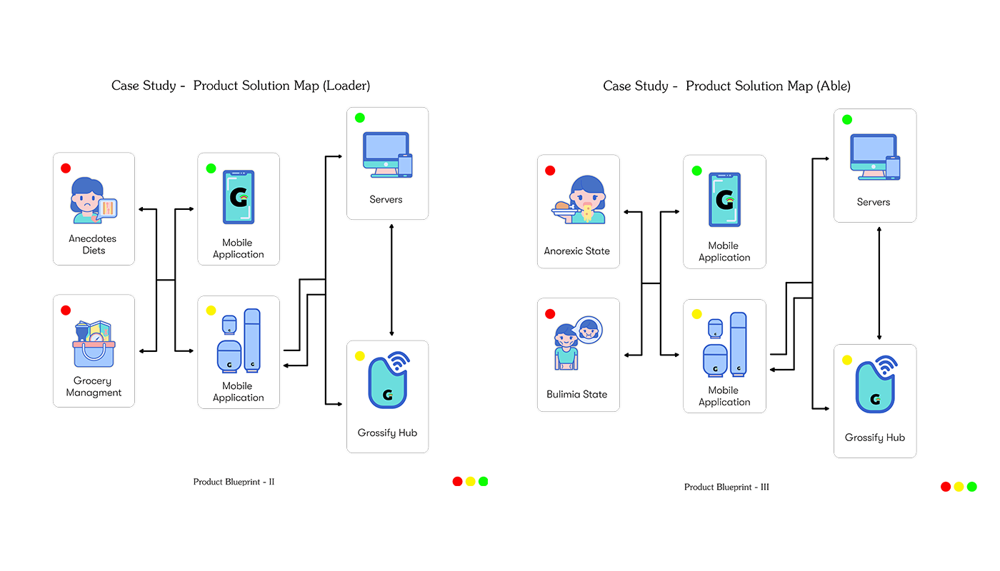
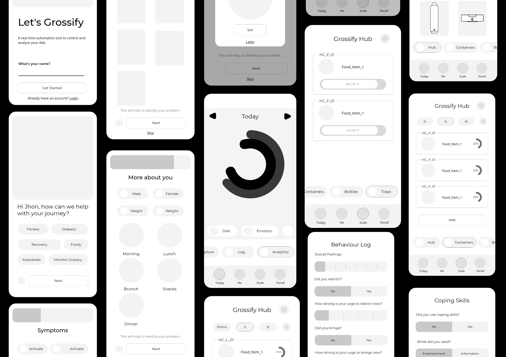
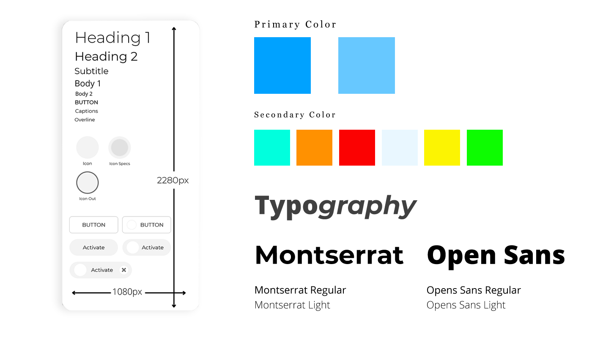
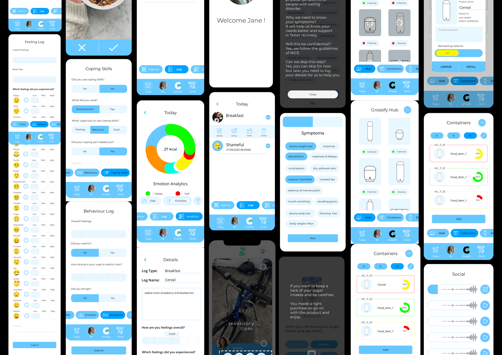

Kitchen Automation
skills:User Research, Literature Review, Storyboards,
Wireframing,User Flows, User Testing,
Interactive Prototype
Adobe XD, Adobe Illustrator, Adobe Photoshop
Introduction
A clear and effective solution towards the need of the specially-abled people those need a small push to revive the health condition with small help of health-tech.The solution is based on IoT framework. Where the product uses real-time monitoring of the diet. The focus is not specific towards a group of people rather it’s for all the health and wellbeing. Discussing the model of the solution it’s both hardware and software-based. Where the user needs to purchase the device and integrate it with a mobile application. The whole IoT ecosystem connects using Microsoft Azure Cloud.
Project Timeline (5 Weeks)

Objective
To design an application to monitor and revise all the counts in the report with the help of real-time access of the consumption from the container and appliances. To make the usability more flexible and the design more blended with user aesthetics.
Literature
Primary user target group includes users with eating disorder and those who needs recovery. But also these user group needed a device to monitor the diet strictly. Which currently is not available in the market in one bundle of product. Research and finding suggest that estimated that 64% of Americans own a smartphone, with even higher rates among younger adults.
Product Ergonimics
- Phase I
-
The company which provides a solution which includes manufacturing or assembly of the products and packaging. The management team is focused on providing a solution for both user and clinician (other medical organisations), they also monitor the data management and security of the application and data of the respective users with the help of CRM services. Also wired with the cloud they can extract data on request.
- Phase II
-
The product includes the individual devices (smart jars or containers), hub and the mobile application. The devices interact with the mobile application showing the real-time volume of food in the container.
The application architecture which includes the working of the whole solution comprises 4 sections
- Hardware Working Model
- PubNub DNS
- Inventory Tracking System
- Mobile Application
Hardware Working Model is the primary source framework where the data is generated, where the containers are mounted with a small device named as Grossify Mount which is made of 4 load cells that measure the quantity of food-filled and used in an instance basis. Each instance states the amount (volume) of food taken from the container. The other components such as Raspberry Pi 4 and Bluetooth HM 10 helps to compute the data to the LinkIt ONE module to transmit the data to the real-time cloud.
Persona
The need of persona is to prepare an imaginary perspective of attributes that our end user will have. And derive all the pain-points needs and other dependency factors. Where we have two extreme if the senario for recovery and needs care.
Jaime is diabetic where she is perfect fit to keep an account of her food quanitity and volume of daily diet.
Shopie is an Anorexic person with an unique set of dismay for food, as she is a cook herself. She needs to keep an track of her recovery as well as her kitchen inventory.


Low-Fidelity Wireframes
Low-fidelity wireframes helped to arrange the interface elements while keeping focus on the functionality rather than visual appearance. Moreover, the simplicity of low-fidelity wireframes allowed to quickly test ideas without wasting time into the details.
Style-Guide
High-Fidelity Wireframes
Hardware Working Model is the primary source framework where the data is generated, where the containers are mounted with a small device named as Grossify Mount which is made of 4 load cells that measure the quantity of food-filled and used in an instance basis. Each instance states the amount (volume) of food taken from the container. The other components such as Raspberry Pi 4 and Bluetooth HM 10 helps to compute the data to the LinkIt ONE module to transmit the data to the real-time cloud.
